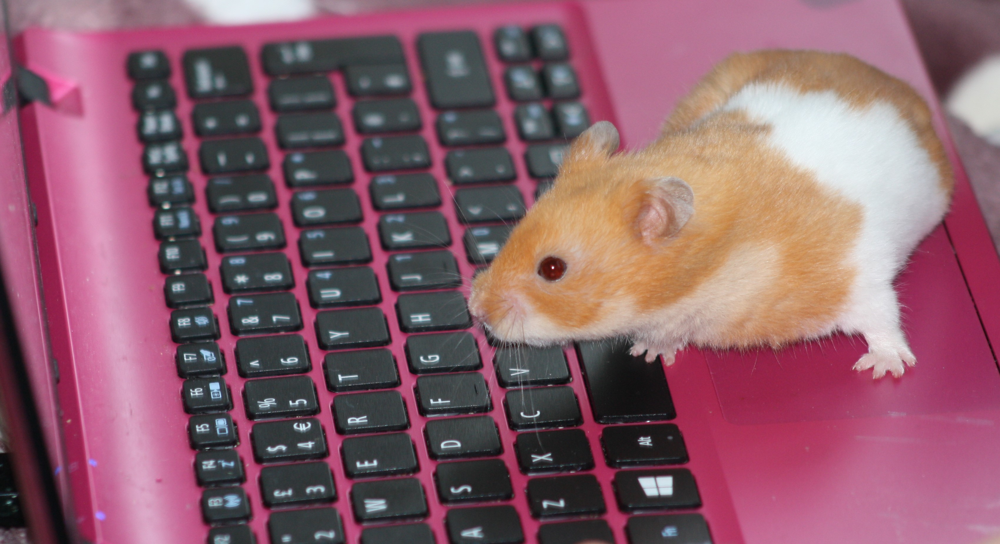
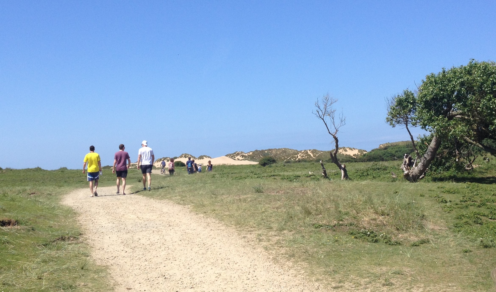
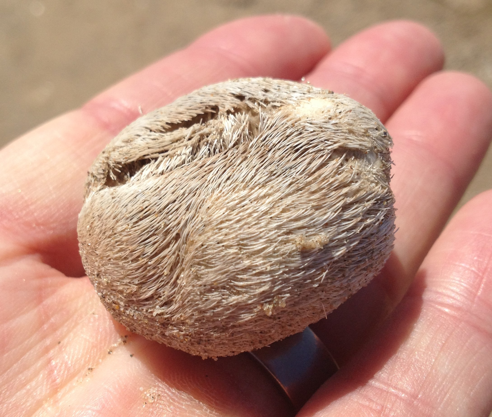
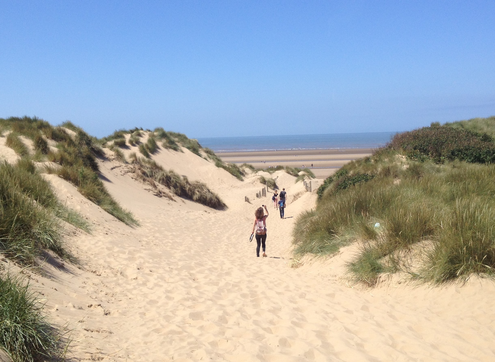

18-Jun-2017 | Milku
The proper one...no squirrels involved.
It's Day 18 of 30 Days Wild and I missed a day of blogging even if we did manage to tweet a couple of pictures to @30DaysWild. My humans came back with the pictures a bit too late for me to want to log on...I don't like blogging when they're around and watching me. So this update is all about what they did yesterday.
They hoped to visit the squirrels in the National Trust site at Formby. But so did the rest of the population. The queues were too long to get on site so they headed to Formby Point itself...just a little farther South.
There aren't so many trees near this part of Formby beach...actually, to the locals, the squirrels live in Freshfield, near to the big houses where lots of footballers reside. But if the National Trust want to refer to it as Formby then who am I to argue.
One of my big humans was telling me that she spent one summer surveying the dune vegetation at Formby, and checking what effects people and rabbits had on it. She thought it would be a great way to spend the holiday, lounging around the beach in the sun. There was just one problem, it was the most miserable summer weatherwise. Oh well, it was glorious sunshine yesterday and quite warm too.
Once again they hoped to spot prehistoric footprints or the tobacco cliffs, but were disappointed - again!
They enjoyed a picnic on the beach though and walked along the tide line to try to spot interesting shells. There were quite a few sea potatoes there. Now they have a collection of these little urchins that look like tiny brains. But yesterday, they managed to find some that still had their spines attached - a bit unusual.
Then they ambled back through the dunes. They wanted to visit Grandma too. They knew she'd have lots of ice cream in her freezer, which was just the thing they needed in the heat.
